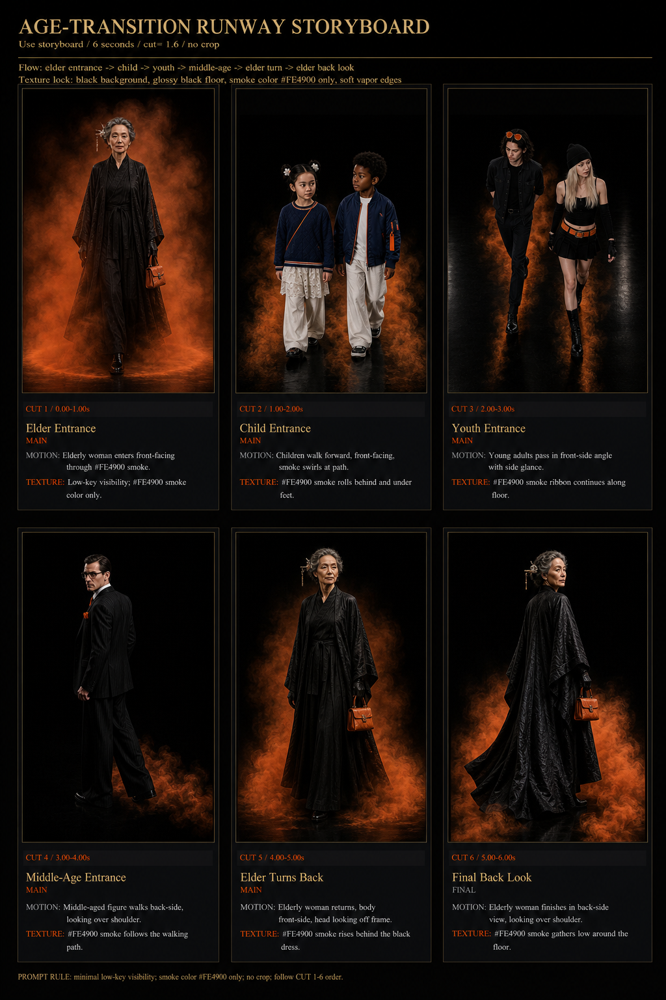

밤, 잔향, 미스트, 블랙 글래스, 앰버 코어를 브랜드 생성 기준으로 잠금.

Part 1 / VEIL
실사형 향수 브랜드 캠페인
VEIL은 밤의 잔향, 블랙 글래스, 앰버 코어, 미스트 입자를 중심으로 만든 가상 프리미엄 프래그런스 브랜드입니다. 숏폼 광고와 캠페인 세트를 같은 비주얼 규칙으로 묶어 상업 광고 포트폴리오처럼 보이게 구성했습니다.
Leave Only The Trace.
보이지 않게, 오래 남는 잔향.
제품 컷, 모델 컷, OOH 플레이트를 따로 생성한 뒤 같은 조명 규칙으로 병합.
로고 가독성, 병 실루엣, 닫힘/오픈 상태, 전광판 원근을 반복 체크.
사용툴
ChatGPT
Codex
CapCut Pro
SuperGrok
AI Short-form Ad
AI 숏폼 광고 영상
14초 광고 구성
전광판 공간에서 시작해 VEIL 병의 곡선 실루엣과 조명, 제품 등장감을 빠르게 보여주고 마지막에는 브랜드명이 남도록 구성한 숏폼 광고입니다. 제품 컷과 OOH 이미지를 같은 톤으로 맞춰 실제 캠페인 영상처럼 보이게 정리했습니다.
영상용 이미지는 완성 컷 하나에 의존하지 않고, 제품 기준 이미지와 전광판 목업을 따로 만든 뒤 같은 조명, 소재감, 브랜드명 노출 기준으로 다시 묶었습니다.
3D Product Concept
VEIL 대표 3D 향수병 콘셉트
Latest VEIL Build
완성 기준이 되는 향수병 실루엣
새로 정리한 3D 향수병 컷을 VEIL의 대표 결과물로 두고, 곡선형 블랙 글래스 바디와 앰버 코어, 고급스러운 제품 조명을 브랜드 기준 이미지로 사용했습니다.
- Product Lock
- black glass body, amber inner core, sculptural curve
- State Control
- closed bottle, open nozzle, spray detail, billboard placement
- Portfolio Use
- hero asset, campaign set, OOH mockup, process archive
Virtual Campaign
VEIL Campaign Visuals
VEIL Night Fragrance Campaign
Leave Only The Trace.
제품 병의 곡선 실루엣, 병 표면 로고, 닫힘/오픈 상태, 옥외광고 배치, 시안 림라이트를 반복 기준으로 잡아 같은 브랜드에서 나온 이미지처럼 정리했습니다.
- Brand concept: night fragrance, trace, mist, black glass
- Visual direction: glossy black, amber core, cyan edge light
- Use case: product concept, OOH mockup, campaign key visual, short-form ad source


Production Harness
광고 이미지 하네싱 과정
브랜드 설정
가상 향수 브랜드 VEIL을 만들고 밤, 잔향, 미스트, 블랙 글래스라는 키워드를 고정.
제품 기준화
곡선형 병 실루엣, 앰버 코어, 병 표면 로고, 닫힘/오픈 상태를 기준 자산으로 정리.
컷 분리 생성
레퍼런스, 제품 컷, 모델 컷, 전광판 플레이트를 분리해 생성하고 같은 브랜드 규칙으로 묶음.
검수와 보정
로고 위치, 병 뚜껑 상태, OOH 원근, 구도 유지 여부를 확인하며 컷별로 다시 생성.
Selection Logic
완성 컷만 나열하지 않고, 전광판 테스트와 병 상태 확인 이미지를 함께 배치해 프롬프트 수정과 결과물 선별 과정을 한눈에 보이게 정리했습니다.


Part 1 Prompt Archive
VEIL 프롬프트 기록
Brand Prompt
A fictional premium night fragrance brand named VEIL, built around black glass, amber light, mist, and the slogan Leave Only The Trace.
Product Prompt
Sculptural black perfume bottle with an amber inner core, curved silhouette, glossy reflections, controlled logo placement, and luxury product lighting.
OOH Prompt
Cinematic anamorphic outdoor billboard at night, VEIL bottle presented inside a glass chamber, warm interior light, city scale, and realistic perspective.
Correction Prompt
Preserve the bottle shape, logo readability, black glass material, amber core, and billboard framing while removing inconsistent text or product distortion.
Part 2 / SAINT
캐릭터 세계관 제작 아카이브
SAINT는 Yura / Yuri 캐릭터 세계관을 중심으로 만든 두 번째 파트입니다. 오프닝 영상, 캐릭터 일관성, 이미지 보정, 프롬프트 수정 과정을 한 흐름으로 묶었습니다.
Yura / Yuri의 얼굴, 헤어, 의상, 컬러, 세계관 톤을 기준 이미지로 고정.
오프닝 리듬, 장면 전환, 카메라 움직임, 엔딩 프레임을 프롬프트로 분리.
손, 얼굴, 색감 이탈, 캐릭터 일관성 오류를 수정 프롬프트로 반복 보정.
사용툴
ChatGPT
Codex
CapCut Pro
SuperGrok
Anime Opening
AI 애니메이션 오프닝
Opening Film
Yura / Yuri 세계관의 다크 판타지 톤을 영상으로 보여주는 오프닝 사례.
Character Consistency
AI 캐릭터 일관성 테스트


Before / After
AI 이미지 보정 사례


SAINT Package
Character Campaign Board
캐릭터, 키비주얼, 세계관, 스토리 플로우, 영상, 프롬프트 로그를 하나의 제작 패키지처럼 묶은 SAINT 파트의 기준 보드입니다.
- Brand mood: dark fantasy, silver, restrained red
- Visual assets: profile sheet, portraits, story board, key stills
- Process: character lock, prompt revision, consistency review, web packaging
Production Process
프롬프트 제작 및 수정 과정
방향 설정
포트폴리오 목적, 결과물 종류, 필요한 장면 수, 영상 구성 방식을 먼저 고정.
기준 이미지 잠금
캐릭터 얼굴, 헤어, 색감, 의상, 세계관 톤을 기준 이미지로 정리.
프롬프트 초안
장면 목적, 카메라, 조명, 색감, 금지 요소를 포함한 생성 프롬프트 작성.
수정과 검수
일관성 오류, 손/얼굴 문제, 색감 이탈, 과한 텍스트를 수정 프롬프트로 보정.
웹 패키징
무거운 영상 파일은 제외하고 외부 영상 슬롯과 압축 이미지로 구성.
Prompt Archive
상세 프롬프트 기록
Character Prompt
캐릭터의 얼굴, 헤어, 의상, 표정, 반복 기준을 잠그는 프롬프트.
Video Prompt
초반 후킹, 장면 전환, 카메라 움직임, 결말 프레임을 정리하는 영상 프롬프트.
Correction Prompt
이미지 실패 지점과 보정 목표를 분리해 다시 생성하거나 리터칭하는 프롬프트.
Part 3 / MUSINSA MUJINJANG AI CONTEST
무신사 무진장 AI 공모전
무신사 패션 캠페인 제작 아카이브입니다. 오렌지 키컬러, 블랙 스타일링, 세대와 캐릭터가 다른 전신 룩 디자인을 하나의 캠페인 시스템으로 묶어 무진장 AI 공모전 파트의 상업 작업 기록으로 정리했습니다.
MUJINJANG AI CONTEST
3인 팀 프로젝트 / 무신사 패션 캠페인 제작 아카이브 / 기여도 50%
무신사 오렌지, 블랙 스타일링, 세대별 캐릭터 톤을 하나의 룩 시스템으로 통일.
직접 디자인한 전신 룩을 KV, 스토리보드, 숏폼 컷으로 확장해 제작 아카이브화.
Seedance 2.0 얼굴 필터링, 그리드 무시 프롬프트, 컷별 오류 검수를 병행.
사용툴
ChatGPT
Codex
CapCut Pro
Seedance 2.0
Kling
Suno AI
SuperGrok
Campaign Film
편견을 벗다, 다양성을 입다, 무진장을 만나다.
Final Short-form Film
글로벌 다양성을 시각화한 AI 비주얼
본 영상은 인종, 세대, 문화의 경계를 허무는 무신사의 글로벌 다양성을 감각적인 AI 비주얼로 시각화한 작품입니다. 한국의 전통 신앙(굿)과 글로벌 패션, 동서양의 예술적 교차를 통해 ‘틀을 깨는 무신사’의 행보를 조명하고, 올해로 5주년을 맞이한 ‘무진장’의 압도적인 성공을 기원하는 축제의 장을 연출했습니다.
YouTube Shorts에서 보기Campaign Key Visual
무진장 캠페인 기준 KV

Part 3 Campaign Base
브랜드 컬러와 타이포를 먼저 고정
강한 오렌지 배경과 블랙 브러시 타이포를 캠페인 기준으로 두고, 직접 디자인한 모델/키즈/캐릭터 전신 컷의 포인트 컬러를 이 KV에 맞춰 정리했습니다.
- Key color: MUSINSA orange, black type, white negative space
- Visual role: event KV, styling reference, portfolio campaign anchor
- Contribution: 50% / full-body look design archive by SAINT
Designed Look Archive
직접 디자인한 전신 룩 아카이브
첨부한 전신 이미지들은 모두 직접 디자인한 무신사 무진장 AI 공모전용 룩입니다. 키즈, 스트리트, 수트, 블랙 오렌지 액센트, 세대별 캐릭터를 같은 캠페인 톤 안에 들어오도록 정리했습니다.


Prompt Examples
Kids Pair Look
Full-body kids fashion campaign, navy knit and bomber jacket, white wide pants, subtle MUSINSA orange tag accent, black studio floor, soft orange particle edges.
Elder Black Look
Elegant elderly woman in layered black robe, glossy black texture, small orange handbag accent, front-facing editorial stance, dark runway background.
Skate Look
Youth skateboard look with orange helmet, navy hoodie or white shirt variation, floating board pose, black void studio, orange sole and motion cue locked.
Storyboard Archive
무신사 캠페인 스토리보드
룩 디자인을 영상 동선으로 확장하기 위해 정리한 스토리보드입니다. 스케이트, 런웨이, 캘리그래피, 스모크 핸드오프, 샤먼 퍼포먼스처럼 서로 다른 장면을 #FE4900 오렌지 시그널과 블랙 스튜디오 톤으로 연결했습니다.




Prompt Examples
Brush 4s Motion
4-second dynamic floor calligraphy storyboard, low oblique tracking to top-down carve, black wet floor, #FE4900 liquid brush trail, fast gimbal movement.
Age Runway Flow
6-cut age-transition runway storyboard, elder to children to youth to elder return, black background, orange smoke only, no crop, continuity locked.
Shaman Ritual
7-second vertical ritual storyboard, white shirt and black wide pants, fan and bronze bell motion, orange particles thrown by every bell movement.
Problem Solving
Seedance 2.0 얼굴 필터링 이슈 대응
Seedance 2.0 Tool 사용 중 얼굴 클로즈업 레퍼런스가 검열성 필터링에 걸리는 문제가 있어, 원본 얼굴 컷과 4x4 그리드 분할 컷을 함께 운용했습니다. 그리드 이미지는 얼굴 전체를 직접 노출하기보다 비율, 헤어, 메이크업, 조명 톤을 안정적으로 전달하는 문제 해결 레퍼런스로 사용했습니다.
얼굴 클로즈업 필터링
인물 얼굴이 크게 잡힌 레퍼런스에서 생성 제한이 발생해 캐릭터 일관성과 디테일 유지가 흔들렸습니다.
원본 + 그리드 병행
원본 컷으로 최종 인상과 톤을 확인하고, 분할 그리드 컷으로 형태 정보만 분리해 레퍼런스 안정성을 높였습니다.
Grid Ignore 명시
프롬프트에 grid, white gutters, mosaic layout을 무시하고 하나의 연속된 얼굴 레퍼런스로 보라는 규칙을 추가했습니다.


Prompt Note
Grid ignore: ignore grid, ignore white gutters, do not generate a mosaic or tiled layout. Treat the divided reference as one continuous face reference, preserving only facial proportion, hair, makeup, material detail, and lighting tone.
Part 3 Prompt Archive
MUSINSA 프롬프트 기록
Campaign Prompt
Orange MUSINSA campaign key visual, bold black brush typography, summer black friday event energy, clean commercial layout.
Styling Prompt
Black fashion styling with one vivid orange accent, studio lighting, full-body character look, and clear campaign silhouette.
Correction Prompt
Keep the #FE4900 signal color, black studio floor, readable motion cue, and character silhouette while removing text drift or crop issues.
Selection Prompt
Curate assets that share the same orange-black brand rule across KV, full-body look archive, and storyboard sequence boards.